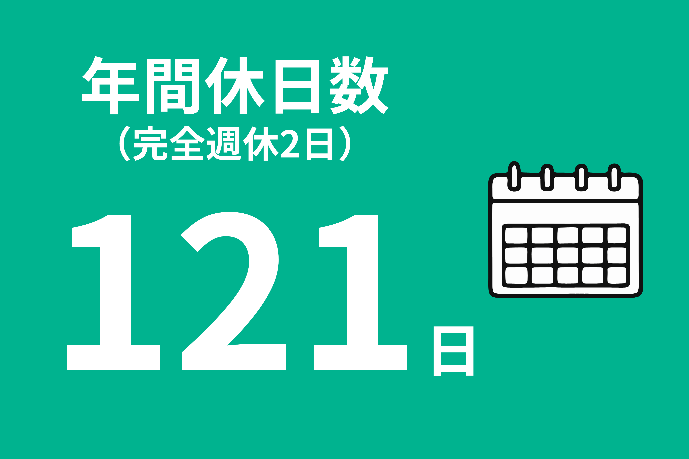
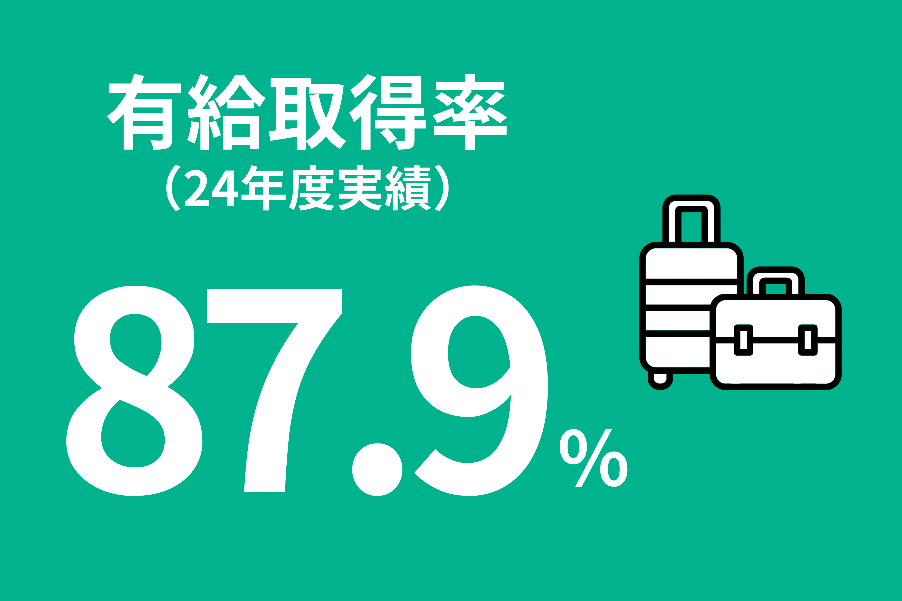
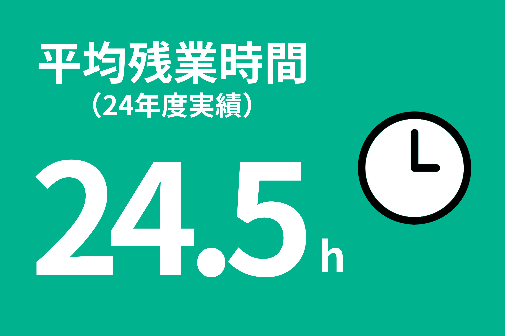
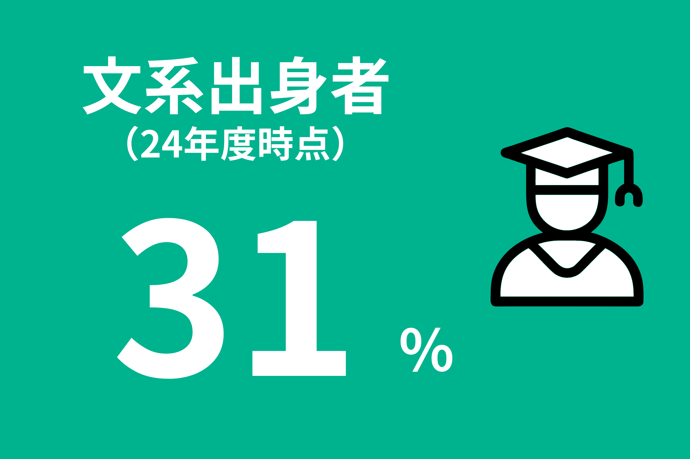
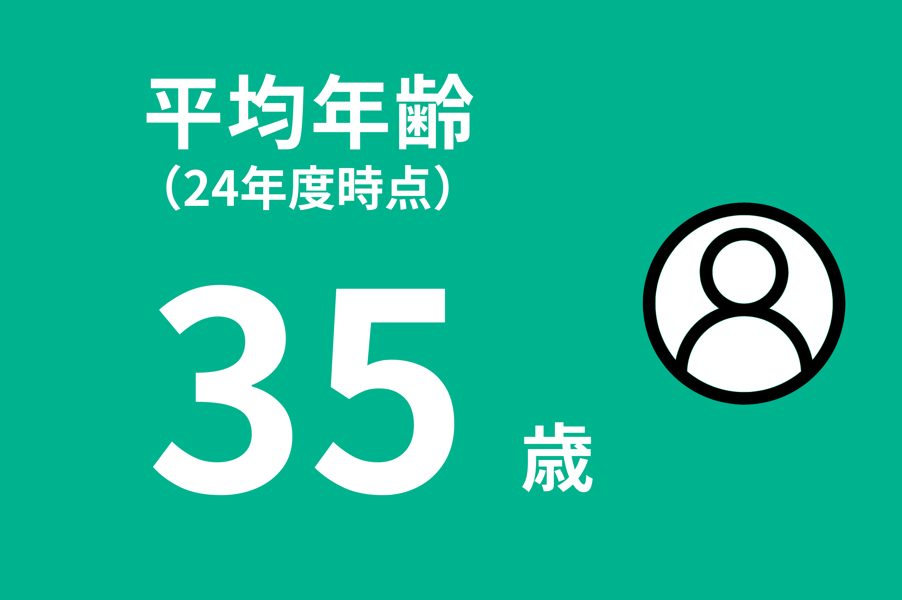
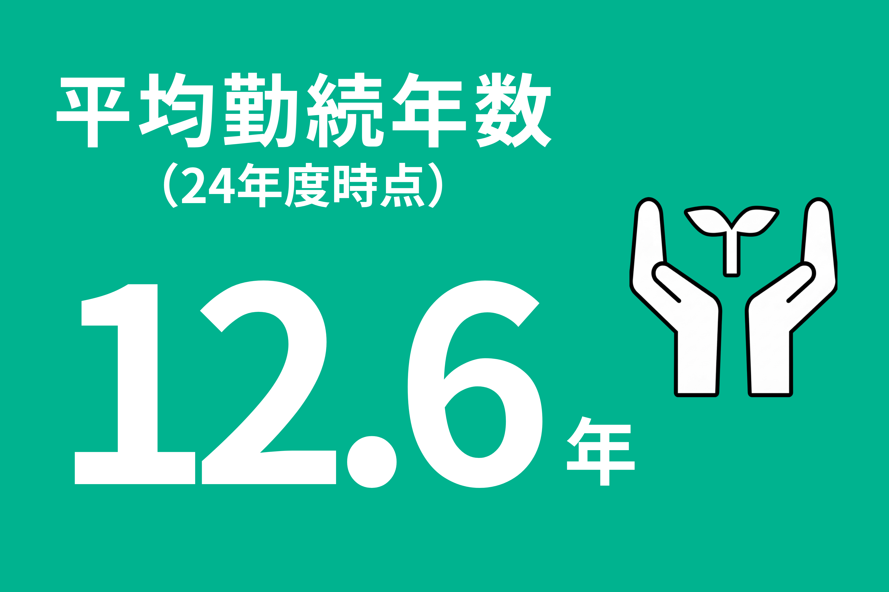

エントリー新卒採用の方は
こちら
※マイナビへ移動します






入社に向けて、社会人としての心構えを学ぶ講習や事前課題、内定者同士の懇親会などを行います。
※新卒のみ（入社半年前以降）
ビジネスマナーやコミュニケーションの基本、機密情報の取り扱い方など、仕事をするうえで必要な知識を幅広く学びます。
約3か月間の研修を終えた後は、本社の設計室に配属。
先輩社員の指導を受けながら、実際の仕事を通じて少しずつ技術や知識を身につけていきます。
定期的に個別面談を行い、一人ひとりの適性や希望を踏まえて配属先を決定します。